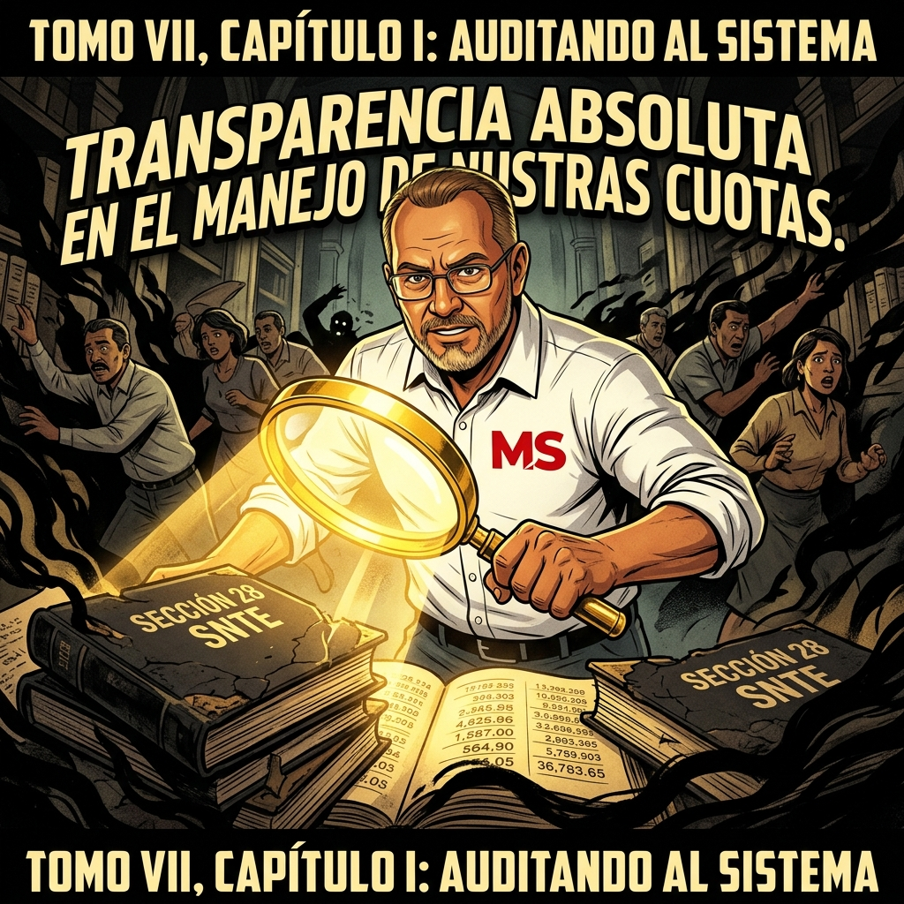
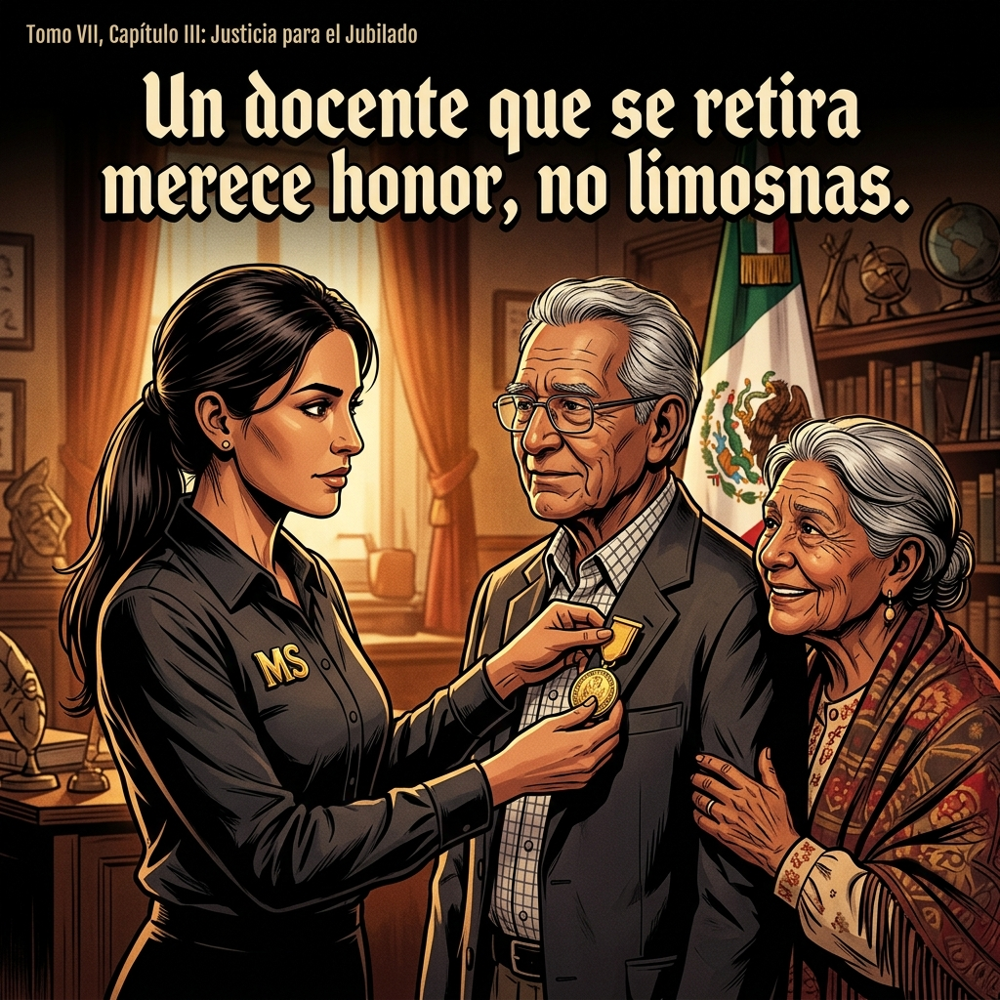
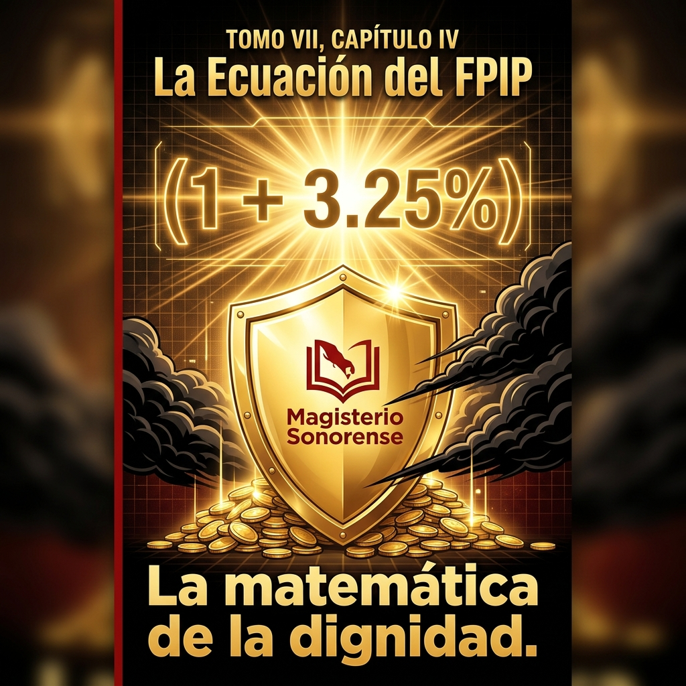
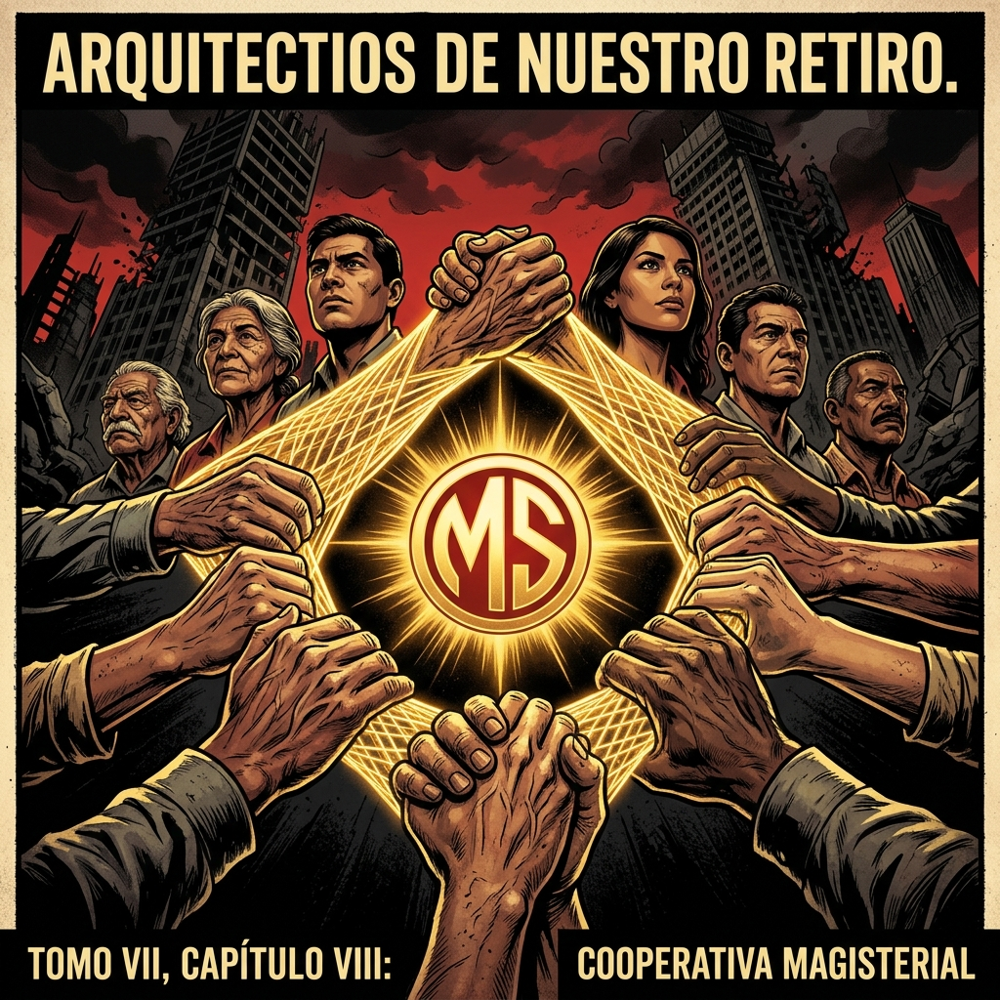
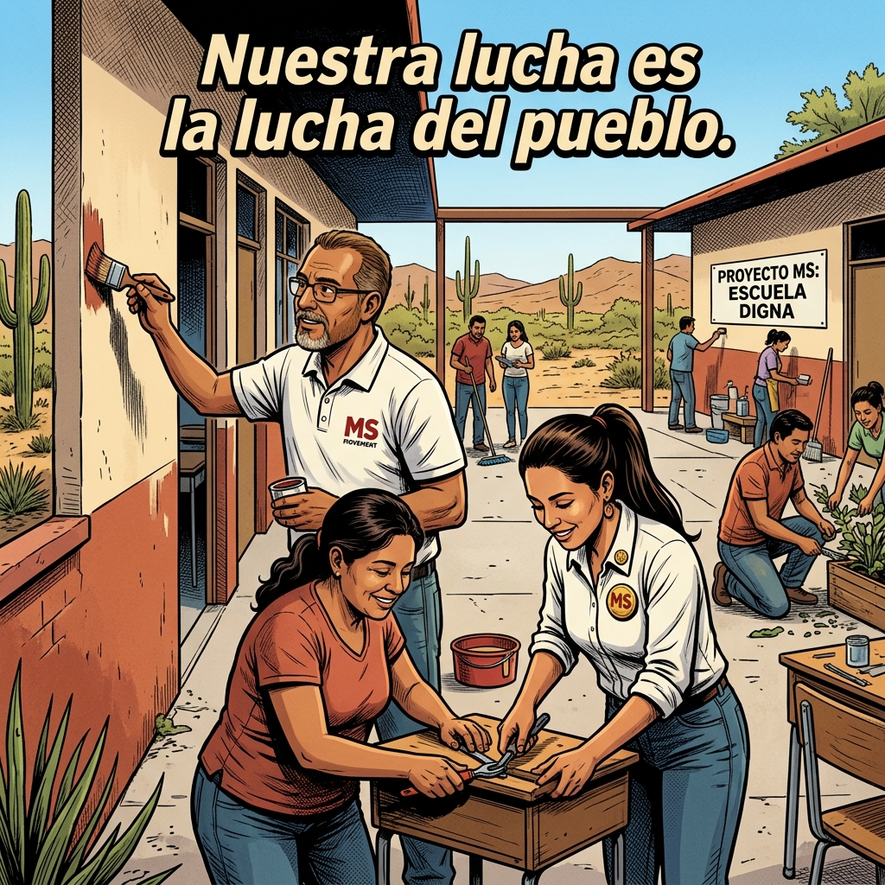
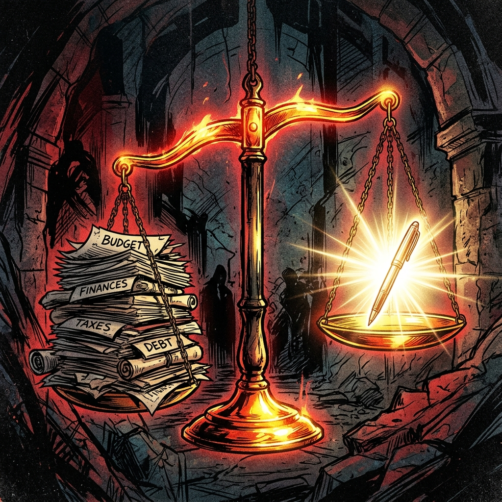
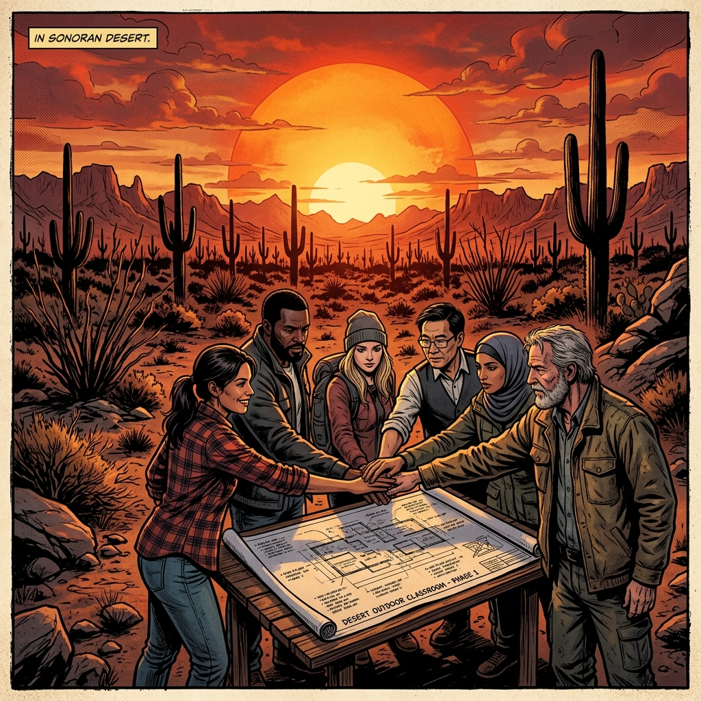
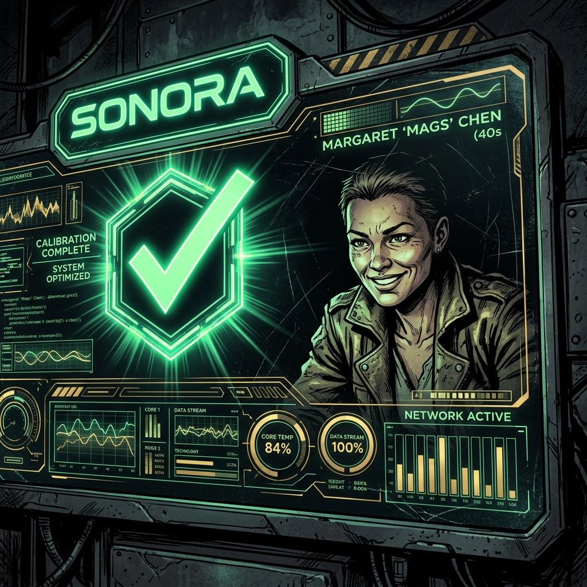

El Pliego de la Dignidad
"La ruta técnica hacia la soberanía magisterial. Una demanda de justicia que no acepta esperas y se fundamenta en la verdad absoluta."
El Pliego de la Dignidad no es un listado de peticiones; es un manifiesto de supervivencia institucional. En estas páginas desglosamos la ingeniería legal necesaria para rescatar nuestro futuro de las garras de la negligencia administrativa y la opacidad financiera.

Forense Histórica
"Nuestros datos revelan un mapa del despojo que la autoridad pretende ocultar tras cortinas de humo burocráticas."
Mediante el análisis de tendencias FONE y registros históricos de aportaciones desviadas, hemos proyectado el colapso del sistema si no se aplica una Auditoría Forense inmediata y vinculante. La justicia no es negociable cuando los números demuestran el fraude.
El Verdugo de la UMA
"Cuando el retiro del docente se convierte en una cifra devaluada, el magisterio se levanta con razones técnicas supremas."
La desindexación del salario mínimo para el cálculo de pensiones ha sido el robo más silencioso y cruel del siglo. Exigimos el retorno inmediato al esquema porcentual que garantice que la jubilación sea un premio digno al esfuerzo de una vida, no una condena a la miseria planificada.

Veteranos del Desierto
"Nuestros jubilados no son el pasado, son el escudo moral y la brújula técnica que protege a los nuevos docentes."
La deuda con quienes construyeron la educación sonorense es impagable. Su presencia activa en la lucha es un recordatorio de que la dignidad no tiene fecha de caducidad. Su experticia técnica es la garantía de que no nos volverán a engañar con promesas vacías.

Blindaje del FPIP
"Blindar el fondo de pensiones hoy es asegurar la soberanía alimentaria de cada familia magisterial mañana."
La capitalización urgente del FPIP es el pilar central de nuestra demanda. Proponemos un candado de gobernanza técnica que impida el uso discrecional de estos recursos. El ahorro del maestro debe ser intocable, productivo y auditado por la propia base.
Bóveda de Resiliencia
"Donde guardamos no solo recursos, sino la inteligencia colectiva para una victoria definitiva."
La resiliencia magisterial no es pasividad; es la construcción de alternativas autónomas. Diseñamos estructuras de soporte financiero que trascienden las fallas del estado, blindando nuestra economía familiar contra las crisis inducidas por la mala administración pública.
Transparencia de Cristal
"Bajo la luz de la verdad técnica, las sombras del viejo sistema clientelar se disuelven para siempre."
Exigimos portales de transparencia radical donde cada peso sea rastreable en tiempo real. La era de la opacidad y los desvíos inexplicables ha terminado. La base informada será, a partir de hoy, el máximo órgano de auditoría del sistema sonorense.
El Fin de la Mafia Sindical
"Deducciones claras. Cuentas sanas. Un sindicato que sirve al maestro de base, no al burócrata de cúpula."
El saneamiento de las cuotas y la transparencia en las deducciones de nómina son requisitos inalterables. No permitiremos que nuestro salario sea la caja chica de estructuras que han traicionado el mandato de la asamblea. La soberanía retorna a las bases.

Cooperativa Soberana
"La unión de esfuerzos individuales genera la potencia necesaria para romper las cadenas de la usura externa."
El modelo de cooperativismo del Magisterio Sonorense es la respuesta técnica a los préstamos abusivos. Al centralizar nuestro propio capital, generamos beneficios que retornan directamente al docente, rompiendo la dependencia del casino financiero tradicional.

El Aula de la Libertad
"La lucha se enseña con la coherencia. Cada aula es hoy un nodo de consciencia estratégica."
La concientización profunda es el motor imparable de la movilización. Estamos formando un magisterio que no solo enseña historia, sino que posee la capacidad técnica para reescribirla en favor de la justicia social y la soberanía profesional.
La Sentencia del Destino
"El pliego es nuestra ley. De aquí en adelante, el destino de Sonora se escribe con pluma magisterial."
La entrega de estas demandas marca el punto de no retorno. La fuerza que respalda este documento reside en la unidad de las bases informadas. La historia registrará este momento como el nacimiento de la verdadera justicia en Sonora.

Justicia Reivindicada
"La balanza se inclina finalmente hacia el lado del trabajo honesto, despojando a la mentira de su peso institucional."
Hemos desarticulado la narrativa oficial que culpaba a los maestros del déficit. La auditoría externa ahora confirma que la riqueza existe, pero ha sido mal administrada. Reclamar lo que es nuestro por ley no es un acto de rebeldía, sino de restauración ética del estado.

El Pacto del Desierto
"Bajo el sol de Sonora, la palabra dada entre iguales tiene más valor que cualquier decreto burocrático."
Este pacto sella la alianza indisoluble entre jubilados y activos. No habrá negociación separada ni claudicación parcial. Somos un solo frente técnico, una sola voluntad política y una sola fuerza capaz de paralizar y transformar la realidad del estado.

Victoria Técnica Total
"El triunfo no es solo una meta, es la validación final de que la verdad técnica es invencible."
Llegamos a la culminación del despliegue del Arsenal de la Verdad. Con los sistemas financieros auditados y la base movilizada, la victoria es inminente. El 1 de Mayo no será una marcha más, será la celebración de nuestra independencia profesional y económica.